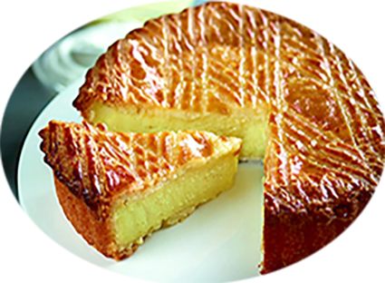

Gâteau Basque

Pour 6 à 8 personnes
Préparation : 50 mn
repos : 2 h
Cuisson : 40 mn
Ingrédients
| La crème pâtissière |
La pâte sablée |
|---|
- 250 g de lait entier
- 1 gousse de vanille
- 40 g de sucreli>
- 25 g de fécule de maïs (maïzena)
- 2 de jaune d’œuf
- 15 g de rhum brun (facultatif)
|
- 145 g de beurre
- 120 g de sucre
- Les zestes d’un citron jaune (facultatif)
- Une pincée de sel
- 220 g de farine type 55
- 3 g de levure chimique
- 3 jaunes d’œufs
- 1 d’œuf pour la dorure
|
Recette
La crème pâtissière
- Portez le lait à ébullition, avec la gousse de vanille fendue et grattée.
- Mélangez à l’aide d’un fouet le sucre, la fécule de maïs et les jaunes d’œufs.
- Versez le lait chaud sur votre mélange, fouettez puis versez à nouveau le tout dans la casserole.
- Portez le tout à ébullition tout en continuant de mélanger.
- Pétrissez pendant 15mn et formez une boule souple, laissez reposer pendant 2h dans un endroit plutôt tiède.
- Versez votre crème pâtissière dans un plat. Déposez un papier film au contact et réservez au réfrigérateur.
- Le rhum servira plus tard
La pâte sablée
- Dans votre robot muni de la feuille, mélangez le beurre, le sucre, la pincée de sel et les zestes de citron.
- Ajoutez la farine et la levure chimique dès que le mélange est homogène.
- Mélangez à nouveau à vitesse lente jusqu’à avoir un mélange sablé, ne mélangez pas plus.
- Ajoutez les jaunes puis mélangez une dernière fois jusqu’à avoir une pâte homogène.
- Formez une boule de pâte puis étalez-la à 4 mm d’épaisseur entre deux feuilles de papier cuisson (ou de silicone). Prévoyez de pouvoir y découper un cercle de 24 cm et un autre de 20 cm.
- Réservez au frais pendant 45 minutes.
Montage et cuisson
- Beurrez et sucrez votre cercle.
- Détaillez un cercle de pâte d’environ 24 cm puis foncez votre cercle à tarte. Réservez le reste de pâte au réfrigérateur pour le moment.
Si vous utilisez un cercle plus haut, détaillez un cercle de pâte de 20 cm puis des bandes de 2 cm.
- Sortez la crème pâtissière du réfrigérateur, retirez la gousse de vanille puis ajoutez le rhum brun. Mixez-la à l’aide d’un mixeur plongeant jusqu’à ce qu’elle soit bien onctueuse.
- Versez la crème sur votre pâte sablée puis lissez à l’aide d’une spatule.
- Découpez enfin un cercle de pâte de 20 cm, puis déposez-le sur la crème pâtissière.
- Dorez une première fois votre gâteau basque à l’aide d’un pinceau puis laissez-le reposer une heure au frais.
- Dorez une seconde fois puis marquez la pâte en passant une fourchette, de manière à former un quadrillage.
- Enfournez pendant 40 minutes à 160°C chaleur tournante.
- Laissez-le refroidir avant de retirer le cercle, il faudra certainement passer un petit couteau pour décoller la pâte.
- Conservez votre gâteau basque à température ambiante, pendant 3 à 4 jours.
|